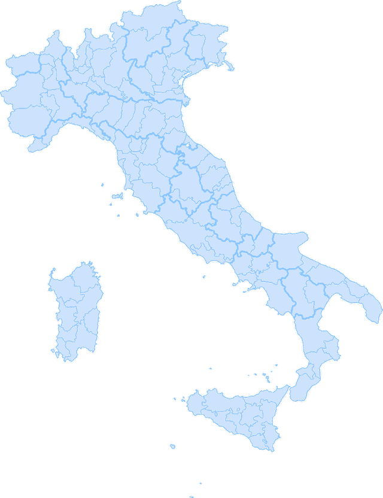

Ogni zona ha
un solo conquistatore.
Vendita Uno lavora con una sola agenzia per zona. Quando prendi la tua, il tuo concorrente resta fuori. Per sempre, finché lavori con noi.
Jacques-Louis David, 1801
La mappa delle conquiste
Oltre 200 agenzie hanno già preso la loro zona.
Ogni punto d'oro è una zona dove un'agenzia partner riceve i proprietari che vogliono vendere. Lì nessun altro può entrare.
Le zone libere sono sempre meno. Appena un'agenzia firma, la sua zona si chiude per tutte le altre.

Anteprima: zone d'esempio
Il campo di battaglia
È finita l'epoca delle agenzie che non hanno mai venduto una casa.
La campagna
Come conquistiamo la tua zona, in quattro fasi.
La mappa
Studiamo il tuo territorio e i tuoi numeri: da dove arrivano i contatti, dove perdi l'incarico.
AnalisiL'addestramento
I tuoi agenti imparano gli script e i processi delle grandi reti, adattati alla tua zona.
FormazioneL'avanzata
Le campagne partono solo sul tuo territorio, sui proprietari che vogliono vendere davvero.
CampagneLa conquista
Trovi l'appuntamento già fissato in agenda. Tu ti presenti e firmi l'incarico.
Incarico firmatoIl patto
Ci paghi solo se la conquista riesce.
Se entro 90 giorni non recuperi quello che hai investito con gli incarichi firmati, lavoriamo altri 60 giorni senza costi. E se non basta, ti rimborsiamo la parte mancante.
Scritto nel contratto, che ti mostriamo per intero nella call conoscitiva.
Conquista la tua zona,
prima che lo faccia un altro.
Una sola agenzia per zona. Candidati e verifichiamo subito se la tua è ancora libera.